Research Question
RQ1
How can playful and creative running applications enhance user engagement and sustain long-term interest in running activities?
Run locally, explore globally
Team members
Why MileScape is needed
In their daily exercise routines, runners require an app to help them plan their training schedules and provide support during workouts, driven by a desire for self-discipline and the ability to track their progress.
Existing fitness apps merely quantify running in terms of distance and duration, providing feedback in the form of figures such as calories burned or weekly summaries [1]. While such self-monitoring features are useful for basic activity tracking, they struggle to address the repetitive nature of running itself, making it difficult to maintain long-term motivation.
Research indicates that up to 42% of users lose interest in fitness trackers within six months [2]. This high attrition rate is partly due to saturation and redundancy in the information provided by fitness apps, as well as a lack of meaningful feedback and a sense of belonging [2][3].
Based on the above issues, our group has identified the following two research questions.
How can playful and creative running applications enhance user engagement and sustain long-term interest in running activities?
How can human-centered design principles enhance runners’ emotional engagement and overall user experience in running applications?
Positioning MileScape between academic research and existing commercial products
Based on our questionnaire responses, 70% of participants were regular runners and 30% had experience organizing running activities. These two groups informed our primary and secondary personas.
The charts below summarize patterns from our questionnaire and market observation, including commonly used running apps, perceived problems in existing fitness products, and preferred playful features.
Original interview screenshots and the field interview photo are presented in the moodboard carousel as qualitative evidence for the research insights.
Questionnaire Evidence
The original 5-page questionnaire PDF is included as source evidence for the survey basis, participant split, and research charts.
Common Products in the Market
Existing running and fitness applications such as Keep, Huawei Health, Nike Run Club, and Apple Fitness focus heavily on performance tracking and structured training.
App usage landscape among target users
Questionnaire-based app usage snapshot; for example, Keep was selected by 24% of surveyed participants.
Market Issues (Runner Perspective)
Most frequently reported weaknesses in existing apps
Original source figure is retained in the appendix.
Our group survey revealed that most existing running applications focus excessively on data—such as mileage and calories—while lacking fun and engaging elements.
Many users reported that these systems fail to provide fresh experiences or meaningful rewards, making it difficult to sustain long-term motivation.
Approximately half of the users mentioned that competitive ranking systems introduce stress rather than enjoyment.
Although social features can increase engagement, they often require continuous coordination by organizers and may not suit all users.
Playful features users want most in running apps
Original source figure is retained in the appendix.
To identify effective incentives, we examined users’ interests beyond running, including gaming and travel.
Users showed strong interest in exploration and collection mechanisms, such as unlocking items and discovering new places.
Therefore, MileScape integrates these two core elements to create a more engaging running experience.
Pure blind-box rewards were considered as an alternative, but we rejected them because random rewards alone can feel disconnected from running effort. The final capsule machine keeps the surprise element, but ties rewards to route progress and collectible assets.
Although organizers represented only 30% of our survey participants, they strongly influence participation.
They reported that:
• Runner motivation declines quickly after initial enthusiasm
• Existing apps struggle to retain users
• Group coordination is time-consuming and difficult
These findings suggest the need for systems that reduce reliance on organizers while supporting intrinsic motivation.
Based on our user research, MileScape must include the following three playful features to transform running from a repetitive tracking activity into an engaging exploration experience.
| Must-Have Feature | User Need Addressed | How MileScape Responds |
|---|---|---|
| Exploration-Based Route Progress | Users want running to feel less repetitive and more goal-oriented. | MileScape converts local running distance into progress along virtual global routes, allowing users to experience running as a journey rather than a task. |
| Landmark Unlocking and Collection | Users want meaningful rewards that can accumulate over time. | Users unlock postcard-style landmarks and collectible route achievements when they reach distance milestones. This creates a long-term visual record of their running effort. |
| PaceCrew Collaborative Exploration | Users want social motivation without ranking pressure. | PaceCrew allows users to contribute mileage to shared team journeys asynchronously, supporting belonging and cooperation without real-time competition. |
We compared MileScape against widely used running and fitness products to understand where current tools succeed, and where they leave room for more playful, emotionally meaningful running experiences.
| Commercial Product | What It Does Well | What It Misses |
|---|---|---|
|
Keep
|
Provides structured running records, including distance, pace, calories, and workout summaries. Offers training plans and a large fitness content ecosystem. Has strong popularity among Chinese users, making it familiar and easy to adopt. |
The screenshots show map-based running, AI guidance, competitions, and medals, so the issue is not a total lack of features. The limitation is that these modules are separated into running, discovery, events, and badges, while progress still ends as local route records or campaign participation rather than a continuous collectible journey. |
|
Huawei Health
|
Integrates well with Huawei wearable devices and provides accurate tracking of running distance, pace, heart rate, calories, and training load. Offers health data visualization and long-term fitness records. Supports users who rely on smart watches for daily exercise monitoring. |
The Huawei screenshots include achievements, badges, and live map tracking, but the reward logic is still tied to steps, distance, calories, rings, personal bests, and threshold-based medals. It offers recognition, yet not much route storytelling, landmark discovery, shared collection, or emotional progress beyond quantified performance. |
|
Nike Run Club
|
Offers guided runs, coaching content, and a polished user interface. Uses achievements and challenges to encourage continued participation. Provides a beginner-friendly running experience with motivational audio guidance. |
The screenshots show activity records and challenges framed as 5K, 15K, 30K, and 80K mileage goals with badges. This makes achievement visible, but the reward remains a numeric completion badge rather than a route story, landmark collection, or collaborative long-term journey. |
|
Apple Fitness
|
Integrates well with wearable devices and health data. Provides reliable tracking of heart rate, distance, pace, and long-term physical progress. Supports users who want accurate self-monitoring and training insights. |
The Apple Fitness screenshots emphasize activity rings, steps, walking distance, workout summaries, badges, and sharing. These support self-monitoring and encouragement, but the reward layer remains abstract and metric-driven, with little exploratory map context, destination narrative, or non-competitive collective progress. |
The screenshots clarify that leading products already support tracking, maps, challenges, medals, and sharing. MileScape's opportunity is therefore more specific: connect running data to an ongoing sense of place, collection, and shared exploration.
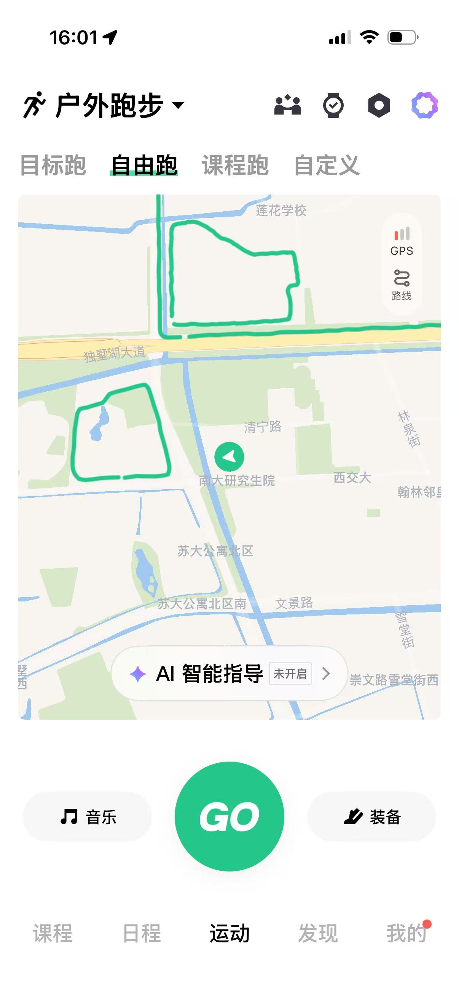
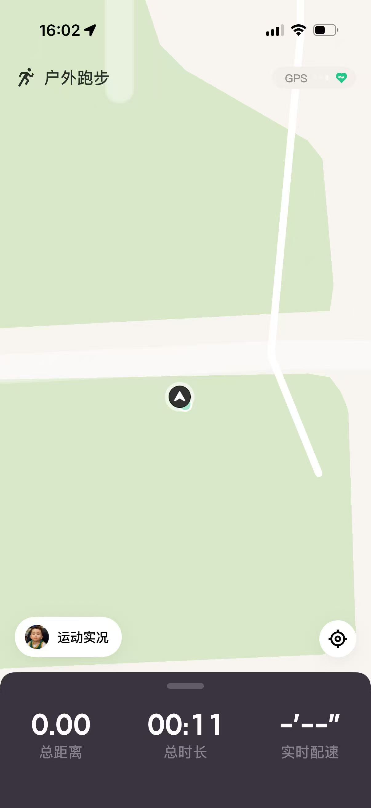
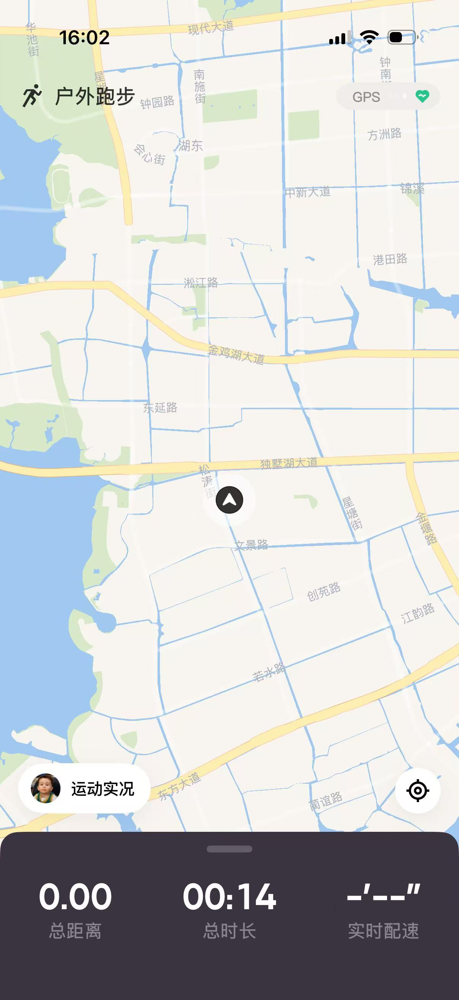
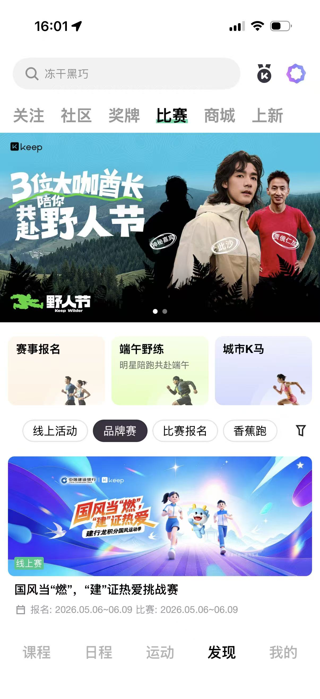
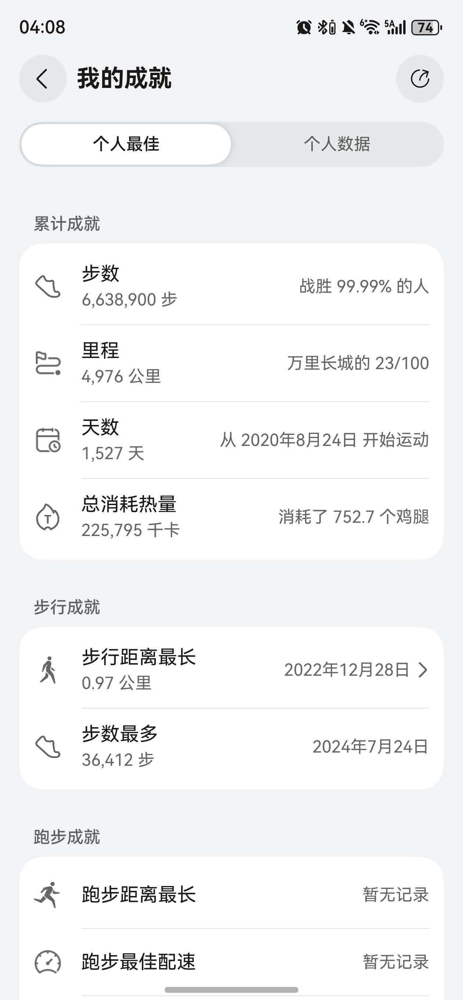
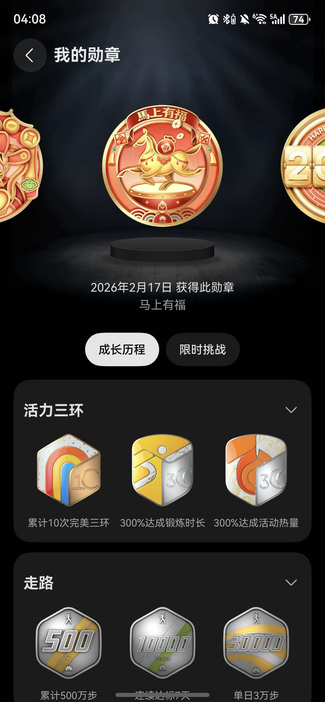
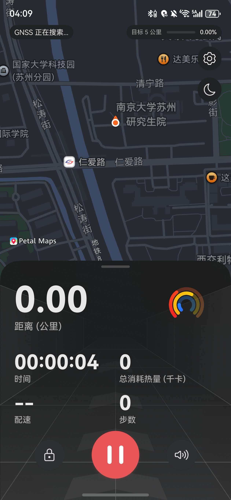
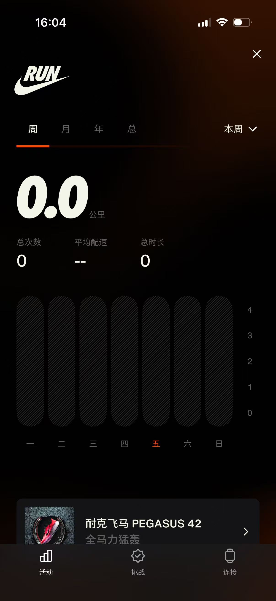
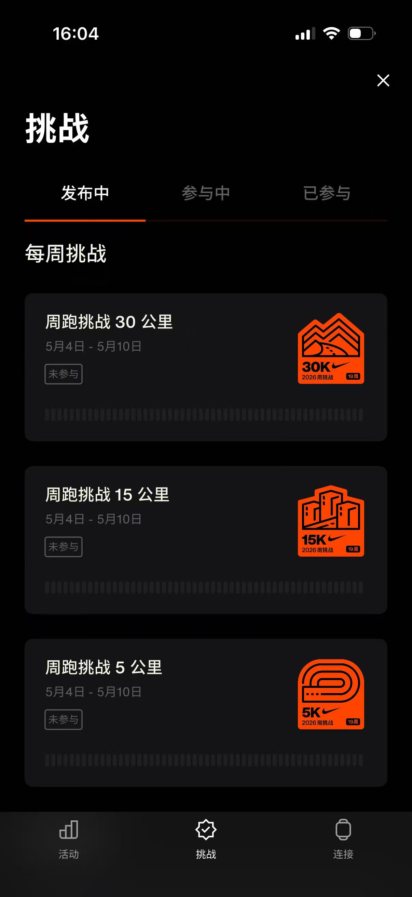
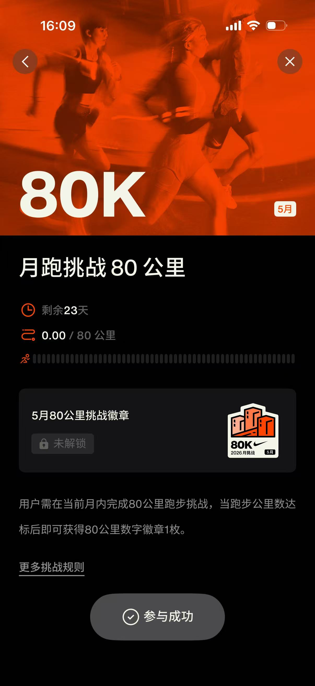
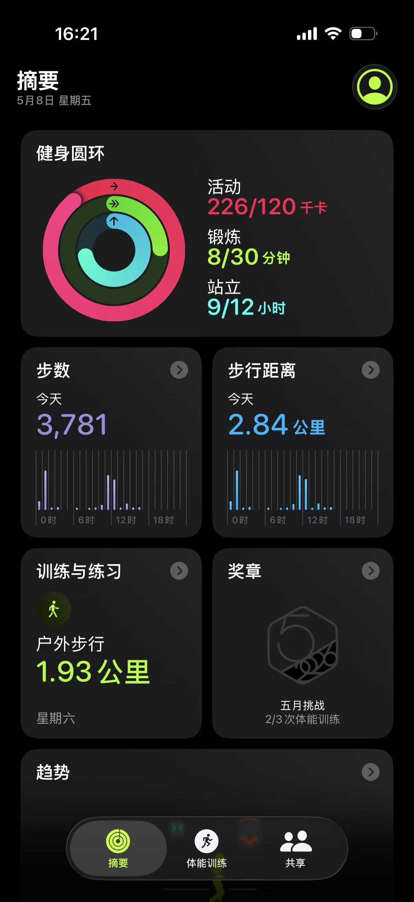
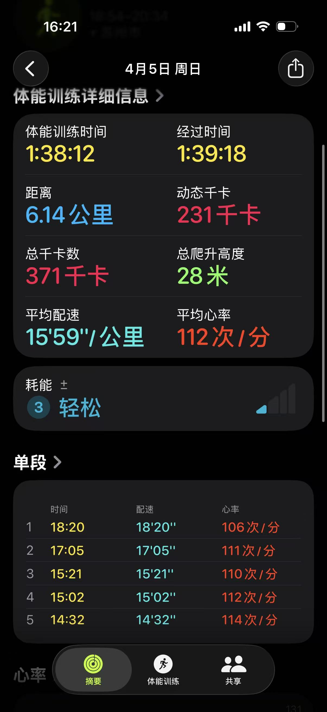
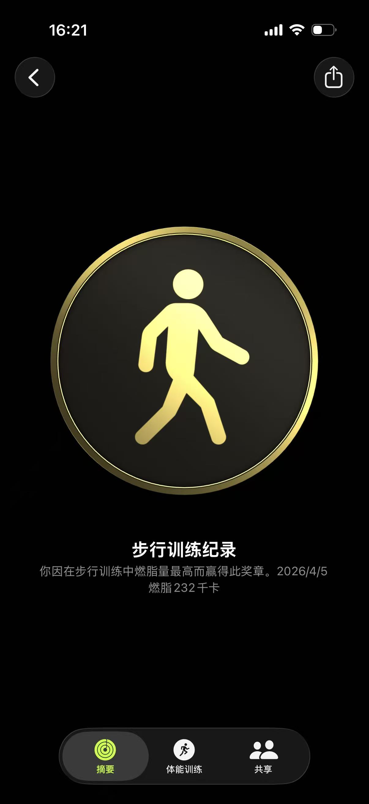
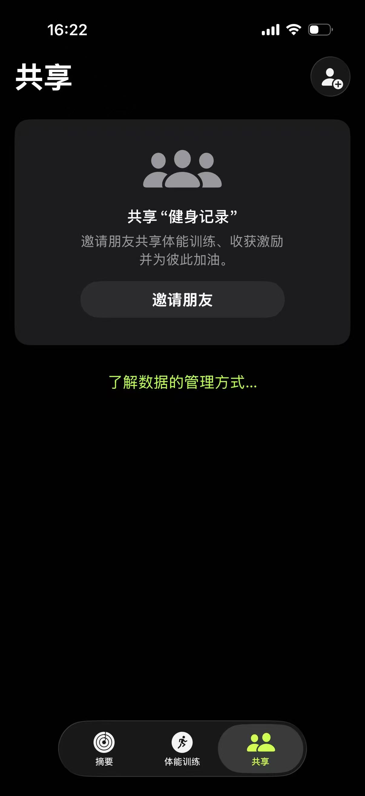
Current running apps focus on data tracking and competition, while lacking engagement, fun, and emotional rewards.
There is a clear gap between user expectations and existing solutions.
→ MileScape addresses this gap by combining exploration, collection, and emotional engagement into a unified running experience.
Primary and secondary users identified through research
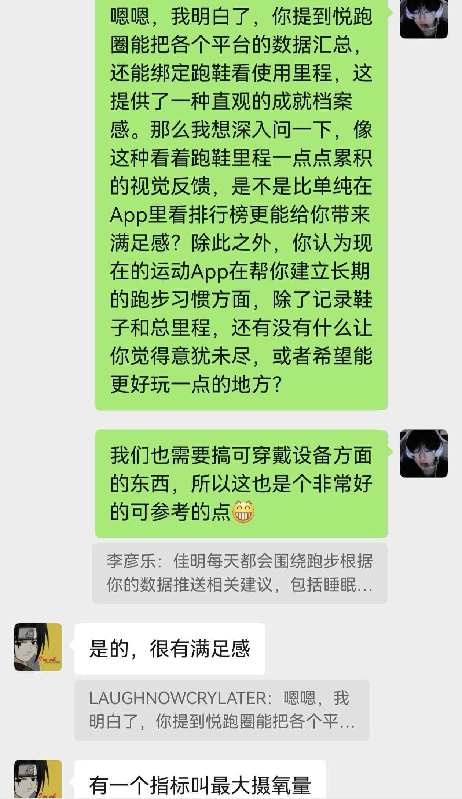
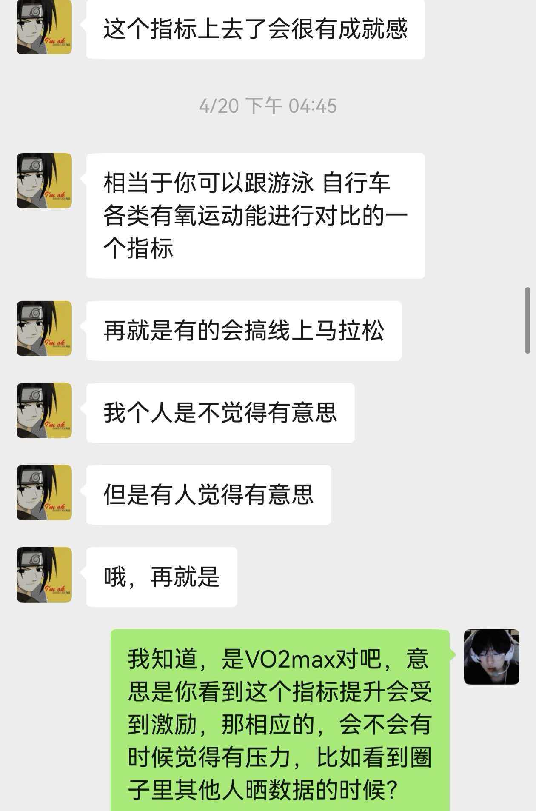
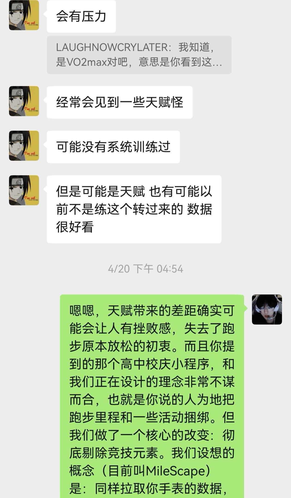
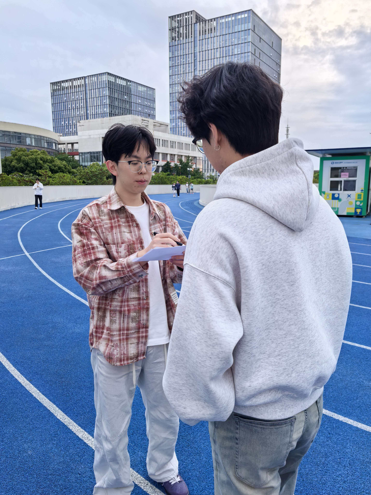
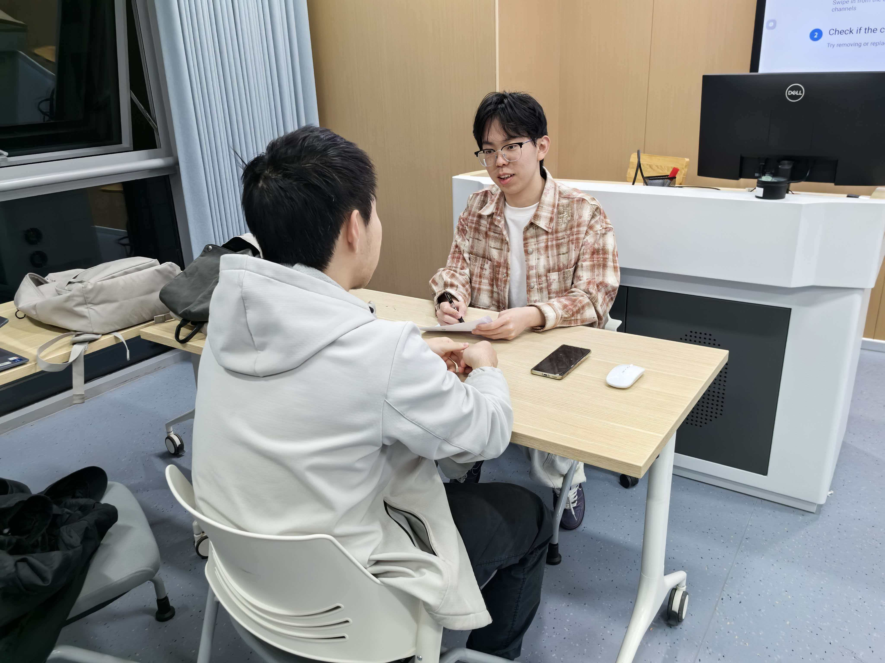

How MileScape addresses motivation, playfulness, and human-centered running experience
MileScape aims to turn running into a journey, not a task.
To design a playful, human-centered running experience that transforms repetitive physical activity into a meaningful, emotionally engaging journey, thereby improving long-term user motivation and engagement.
Adapt Forest's “accumulate focus → visualize as a tree” mechanism to the running context.
At the same time, consider that most existing apps focus on normative social comparisons (such as leaderboards), which may not suit users with a weaker competitive spirit or those pursuing mastery goals rather than performance goals [4].
Instead, adopt the concept of “accumulate running miles → collect stamps,” where stamps can be used to unlock collection items—landmarks.
1. RQ1 aims: Enhance Playfulness in Running
• Transform running from a data-driven activity into a goal-oriented exploration experience
• Reduce user drop-off by introducing progressive milestone rewards (landmark unlocking)
2. RQ2 aims: Foster Social and Emotional Connection
• Replace abstract metrics (distance, calories) with visually meaningful progress (global routes and landmark journeys)
• Provide emotional rewards (e.g., postcard-style landmark unlock moments)
• Enable users to form running groups and participate in shared challenges, fostering a sense of community and belonging
• Allow users to collect and share achievements, enhancing social interaction and long-term attachment to the platform
3. Iterative Minimalist User Experience Design
• Design a clean, distraction-free interface following minimalist principles
• Develop a wearable interface optimized for glanceability, focusing only on essential information (e.g., distance and heart rate)
• Prioritize simplicity not as a static design choice, but as an iterative process shaped by real user feedback.
1. Replace traditional exercise-data dashboards with an exploration-based map experience. Through Mapbox route previews, destination detail pages, and landmark timelines, the project translates running outcomes into a sense of “moving forward in space.”
2. Replace traditional ranking-based motivation with landmark unlocking.
3. Transform scattered running sessions into long-term route progress.
4. Turn running routes into collectible destinations.
5. Allow users to repeat the same route and earn advanced achievements.
6. Reduce the burden of manual recording through wearable-device integration.
7. Use PaceCrew to shift group running from competition and ranking to collaborative exploration.
8. Directly connect social motivation with content unlocking, creating team-exclusive reward mechanisms.
MileScape has created an attractive and user-centered experience by transforming the repetitive action of running from simple digital tracking into an interactive journey full of exploration and discovery.
Firstly, the system turns running into an exploration-filled journey, guided by landmarks, thereby enhancing the users' intrinsic motivation.
Secondly, MileScape brings emotional value and a sense of belonging to users through meaningful rewards.
Thirdly, the design focuses on creating a sense of belonging and connection. Through features such as "PaceCrew", users can participate in team challenges and strive towards a common goal, thus transforming running from a personal activity into a socially significant one.
Finally, the system adopts a minimalist design style and an iterative design approach to ensure that the interaction operations remain simple and intuitive, while continuously optimizing based on user feedback.
Overall, the MileScape project provides effective solutions for our RQ1 and RQ2.
Parallel to the runner journey, this map focuses on how an organizer creates a PaceCrew, launches missions, maintains participation, and closes the group lifecycle responsibly.
A compact view of MileScape's research, design, implementation, and final demo progress.
Defined team roles and project vision.
Set milestones and module responsibilities.
Gathered feedback on running motivation and rewards.
Defined routes, crews, achievements, and My Scape.
Turned running progress into a virtual journey.
Designed the main app flow and page structure.
Built the mobile-first frontend foundation.
Set the soft card style and playful reward tone.
Added Paceport, PaceCrew, My Scape, run, and achievement pages.
Expanded routes, posters, landmarks, and capsule rewards.
Improved placement, inventory, footprints, and item actions.
Added badge visuals and optimized achievement pages.
Tuned route simulation, camera movement, and route access.
Added sharing, date switching, atmosphere effects, and better interactions.
Expanded My Scape and refined the achievement carousel.
Finalized Paceport details and PaceCrew management.
Exploration of design ideas and decision-making process

We compared three directions to decide how MileScape could move from competitive gamification toward collaborative exploration.
| Alternative | Strengths | Problems | Decision |
|---|---|---|---|
| Blind Box Rewards | Provides short-term excitement and surprise. | Cannot support meaningful long-term accumulation if rewards are disconnected from running effort. | Rejected |
| Real-Time Shared Running | Creates immediate social presence. | Hard to focus on dynamic screen information while running; may introduce peer pressure and implicit comparison. | Rejected |
| Landmark-Based Social Exploration | Converts mileage into route progress and shared milestones. | Requires meaningful route and landmark content to make progress feel valuable. | Selected |
Early wireframes and interaction flows tested through Figma prototype.


System design and development details
Live System: milescape.vercel.app
Source Code and README: GitHub repository
Technologies Used: React, Vite, JavaScript, CSS, Mapbox, and Vercel.
Data Handling: Route, landmark, badge, and PaceCrew data are stored as predefined structured data in the prototype. User progress is calculated by mapping running distance to route milestones, unlock states, capsule rewards, and My Scape collectible assets.
Responsive Design: The system is designed as a mobile-first web app, with simplified wearable-style screens, horizontal sliders, and compact cards for quick glanceability during running-related tasks.
Deployment: The live prototype is deployed through Vercel, while this portfolio is hosted separately on GitHub Pages.
The architecture diagram shows how the prototype connects route data, map rendering, progress calculation, PaceCrew collaboration, rewards, and My Scape asset states.
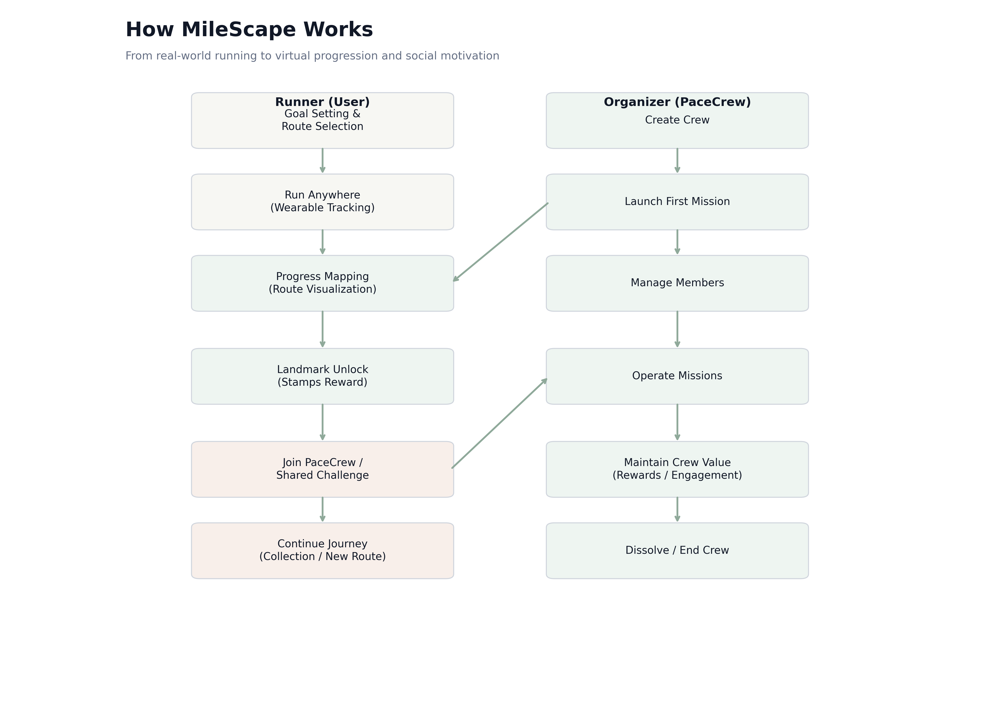


Instead of repeating static screens, this section focuses on how the final product behaves in motion across onboarding, running, collaboration, route progress, and rewards.
This video captures the opening experience, showing how MileScape frames running as an inviting journey before users enter the deeper route flow.
The running-state demo highlights motion, pace feedback, and how route exploration stays immersive while the user is actively moving through the experience.
This module shows how users read route milestones, track distance progression, and experience destinations as collectible journeys instead of flat mileage logs.
The PaceCrew video demonstrates a softer social layer, where users contribute to shared travel progress and team milestones without relying on competitive ranking pressure.
This final demo focuses on the reward layer, showing how achievements, collectible outcomes, and visual celebration turn sustained running effort into something memorable.
How we evaluated MileScape in an early-stage user study
We conducted a small-scale comparative user study (n=7) to evaluate the user experience of MileScape and a mainstream fitness app (Keep).
A simplified version of the User Experience Questionnaire (UEQ-S) was used to assess usability and experience quality across 8 semantic differential scales, including ease of use, efficiency, clarity, excitement, and novelty.
Additionally, inspired by the Intrinsic Motivation Inventory (IMI), we incorporated measures of interest/enjoyment and perceived value to better capture users’ motivation and long-term engagement.
Switch between UEQ-S and IMI to compare Keep and MileScape across each measured dimension. The chart below is reconstructed from the two original evaluation figures.
Original source figures are preserved in the appendix for traceability.
MileScape consistently achieved higher scores than Keep across multiple dimensions, particularly in enjoyment, motivation, and novelty.
Although MileScape falls slightly behind Keep in terms of supportiveness, the gap is minimal. This demonstrates that MileScape has achieved comparable functionality with simple data presentation and a clean interface.
IMI-based results further indicate that users found MileScape more engaging and meaningful, suggesting stronger intrinsic motivation and perceived long-term value.
“MileScape feels more engaging and meaningful.”
“Unlocking landmarks makes running more enjoyable.”
User feedback from the early prototype directly shaped three visible improvements. Each comparison shows the original design problem, the updated interface, and how the change better supports first-time use, visual quality, and immersive route experience.
Users reported that the first version was not clear enough for first-time use. In response, we added a beginner guide so new users can understand the main interaction flow before they start exploring routes.
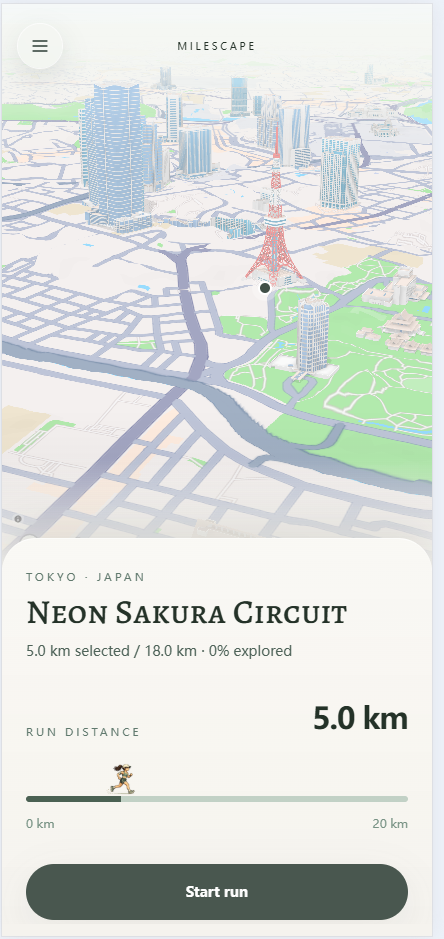
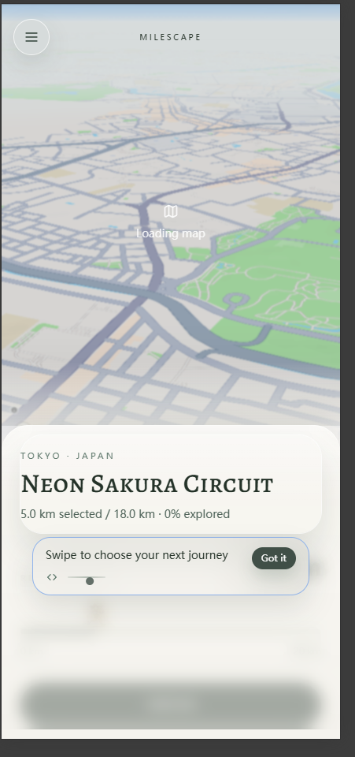
Result: The onboarding flow now reduces uncertainty and helps first-time users understand how to begin the MileScape experience.
Users felt that the first achievement interface was not visually attractive enough. We redesigned it into the current style, with a more polished layout and clearer reward presentation.
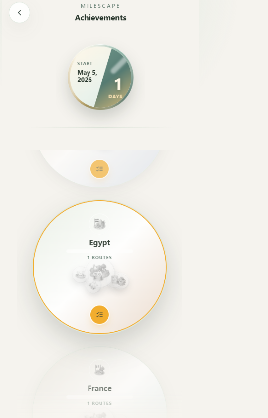
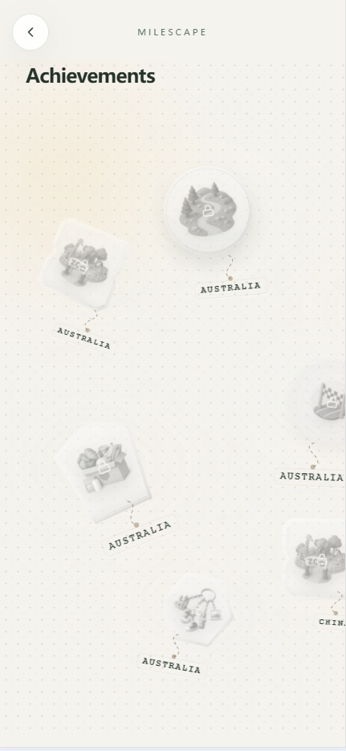
Result: Users recognized the revised achievement page as more visually appealing and better aligned with the collectible reward experience.
The first simulated running route used Mapbox 2D rendering. Users felt that the immersive feeling was not strong enough, so we changed the route experience into a 3D scene rendering.
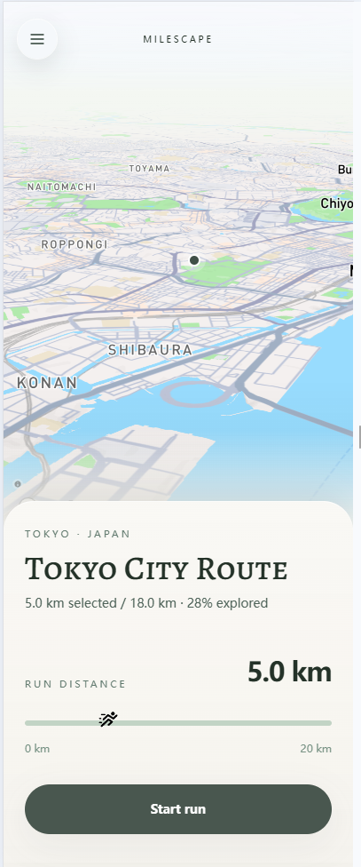
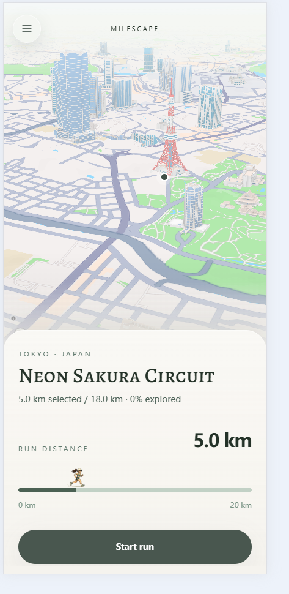
Result: The updated 3D scene improves the sense of presence and makes simulated route exploration feel closer to a playful journey.
Academic sources and AI disclosure
AI tools were used for visual asset generation, language refinement, and limited assistance in scaffolding selected portfolio and interface code. The project motivation, user research, design decisions, and evaluation analysis were completed by the group.
AI-generated outputs were reviewed, edited, and verified before inclusion. Factual claims, chart interpretations, and prototype behavior were checked against our own research materials and implementation. Prompt details for the AI-generated conceptual hero image are disclosed in the reference entry below.
Prompt use: We used AI assistance for limited implementation support, including prompts to scaffold responsive portfolio sections, organize before-and-after evaluation content, refine CSS layout details, and debug interface issues such as broken paths, mobile spacing, and interactive slider behavior. These prompts were task-specific and based on our own research findings, sketches, prototype screens, and evaluation notes.
Verification: AI-generated code was not accepted directly as final work. We checked whether each change matched the three must-have playful requirements: exploration-based route progress, landmark unlocking and collection, and PaceCrew collaborative exploration. We also verified links, image paths, alt text, responsive behavior, and whether the implementation accurately represented our user research and prototype logic.
Ethical considerations: We treated AI as a development assistant rather than a design decision-maker. The motivation, personas, research interpretation, feature selection, and evaluation conclusions were kept as group-authored work. We reviewed AI-assisted wording to avoid overstating evidence, checked that visual and interaction changes did not introduce misleading claims, and considered accessibility by preserving descriptive alt text, keyboard-friendly controls, readable labels, and responsive layouts.
Limitations and responsibility: AI support can introduce layout errors, inaccessible interaction patterns, or biased assumptions about users. For this reason, final responsibility remained with the group: we compared the implementation against user feedback, corrected inaccurate or incomplete AI outputs, and made sure the portfolio clearly distinguishes research evidence from generated or assisted production work.
[1] Y. Bhargava and J. Nabi, "The opportunities, challenges and obligations of Fitness Data Analytics," Procedia Computer Science, vol. 167, pp. 1354–1362, 2020, doi: 10.1016/j.procs.2020.03.346.
[2] Natalie, "42 percent of users lose interest in fitness trackers after 6 months," Big Think, 2015. [Online]. Available: https://bigthink.com/ideafeed/users-lose-interest-in-fitness-trackers-after-6-months
[3] X. Yu and S. Wang, "Research on the Development Status, Problems and Countermeasures of Sports and Fitness APPs," Asian Journal of Social Pharmacy, vol. 20, no. 1, pp. 88–93, 2025.
[4] R. Rockmann and H. Gewald, "Individual fitness app use: The role of goal orientations and motivational affordances," in Proc. Americas Conf. on Information Systems (AMCIS), Cancun, Mexico, 2019. [Online]. Available: https://aisel.aisnet.org/amcis2019/healthcare_it/healthcare_it/3
[5] M. Schrepp, A. Hinderks, and J. Thomaschewski, "Design and Evaluation of a Short Version of the User Experience Questionnaire (UEQ-S)," International Journal of Interactive Multimedia and Artificial Intelligence, vol. 4, no. 6, pp. 103–108, 2017.
[6] Ryan, R. M. (1982). Control and information in the intrapersonal sphere: An extension of cognitive evaluation theory. Journal of Personality and Social Psychology, 43(3), 450–461.
[7] ByteDance Doubao, Seedream 4.5, accessed 5 April 2026. [Online]. Available: https://www.doubao.com. Applied to generate the conceptual hero image in the illustrative figure. Prompt: "Minimal abstract visualization of 70% runners and 30% organizers, contains two overlapping circles, clean Apple-style, flat design, soft shadows, no pie chart, no bar chart."
Original figures retained as source references for the interactive charts above
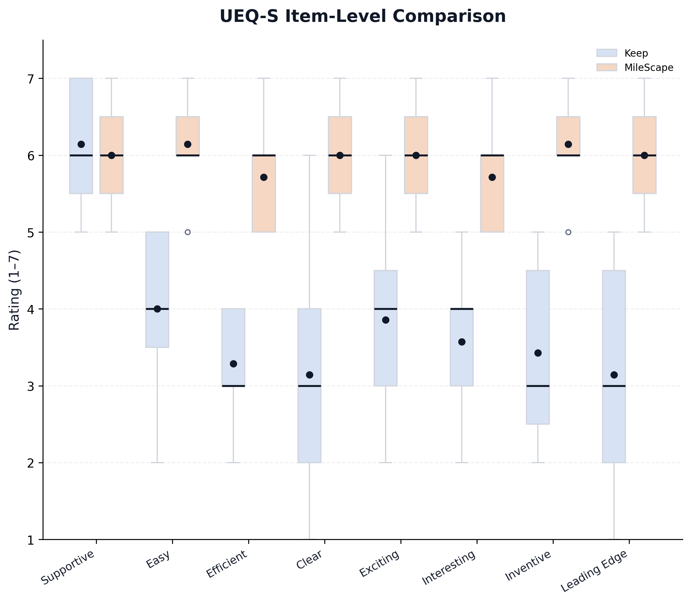
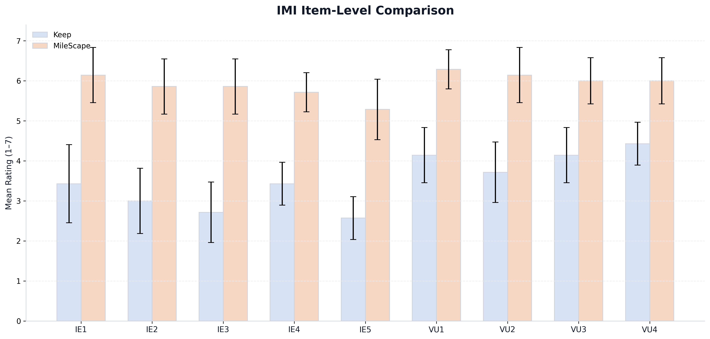
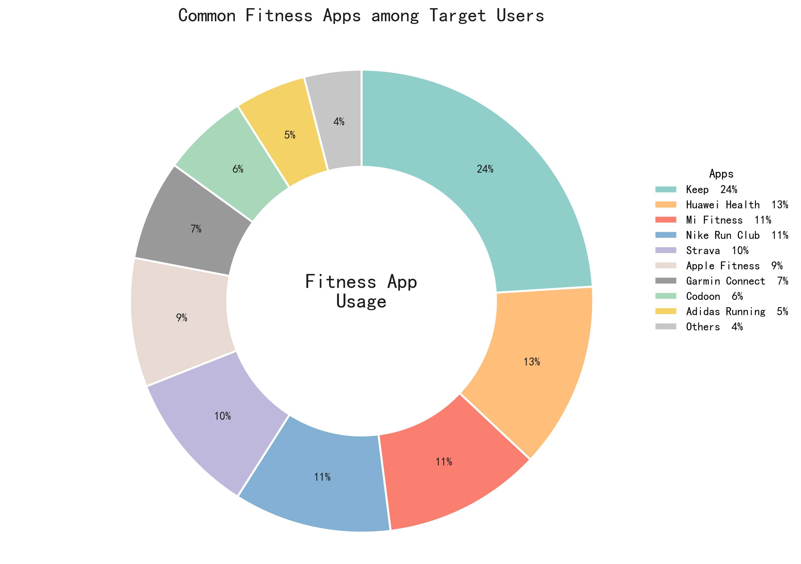


Original Questionnaire PDF
Full questionnaire record retained for traceability alongside the summarized research figures.
Original interview screenshots and field interview photo are preserved here as qualitative evidence for runner motivation, pressure from performance metrics, and the decision to shift from competition toward meaningful progress.
A breakdown of what each team member built across the MileScape project.
| Member | Key Contributions | Share |
|---|---|---|
| Chenrui Zhu | Design system architecture; system-wide UI/UX design; welcome page; watch UI design; high-fidelity prototype; MyPace page design | 25% |
| Shengyang Yin | Gumball machine feature design; questionnaire design & user survey management | 25% |
| Yize Zheng | Figma poster illustration; achievements system design; low-fidelity prototyping | 25% |
| Qi Chen | Map feature design; poster design; portfolio website UI design; low-fidelity prototyping | 25% |
{kind=link}
{kind=link}
{kind=link}
{kind=link}
{kind=link}
{kind=link}
{kind=link}
{kind=link}
{kind=link}
{kind=link}
{kind=link}
{kind=link}
{kind=link}